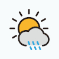
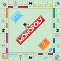

Hello there! I'm Simon Lariz, I'm thrilled to share my portfolio, a reflection of my final year as a Computer Science student at Cal State Fullerton. My journey through the ever-evolving landscape of technology has led me to discover a profound passion for Full Stack Web Development, Artificial Intelligence (Machine Vision), and the captivating realm of Free and Open-Source Software (FOSS).
Within this site, you'll get a glimpse into the culmination of my hard work and dedication. From crafting web applications to diving deep into AI-driven solutions, my projects exhibit a seamless fusion of technical precision and a flair for creativity. With each line of code, I aim to leave a lasting impact on the world of software engineering.
ChessToFEN is an advanced command-line application meticulously designed to capture digital images of chessboards and effortlessly generate the corresponding FEN notation. FEN, a widely recognized standard notation for representing specific board positions in chess games, serves as a valuable tool for strategic analysis and is essential for chess engines to evaluate positions effectively.
Written in Python, this application seamlessly incorporates the prowess of OpenCV for sophisticated image processing and leverages the power of PyTorch for intelligent deep learning capabilities. With precision and efficiency at its core, ChessToFEN empowers users to explore the intricacies of chess games and unlock profound insights into strategic gameplay.
ChessToFEN features a sophisticated custom trained convolutional neural network (CNN) that accurately predicts the positions of chess pieces on the board. Trained on a dataset of 650 hand-labeled images, each matched with its corresponding FEN notation, the CNN's learning experience was enriched through image augmentation techniques like rotation and random noise addition. The result is a highly reliable and precise application that can be used to generate FEN notation for a wide range of chessboard images.

Written in Python and powered by the versatile Flask framework, LiveWeather is an interactive and responsive web application that showcases a clean and modern design. Seamlessly adapting to various devices, LiveWeather provides users with an optimal experience across desktops, tablets, and smartphones.

Written in C++, MonopolyTerminal brings a performance-driven experience to the table. While it may not feature the flashiest graphics, its charm lies in the elegance of its architecture.
I developed MonopolyTerminal as a means to really nail object oriented design and programming. I wanted to create a project that would allow me to explore the intricacies of OOP and really get a feel for the power of C++.
You can send me an email: simonlariz at gmail dot com
Replace "at" with "@" and "dot" with "."
Thanks for taking the time to visit my website
© 2023 Simon Lariz